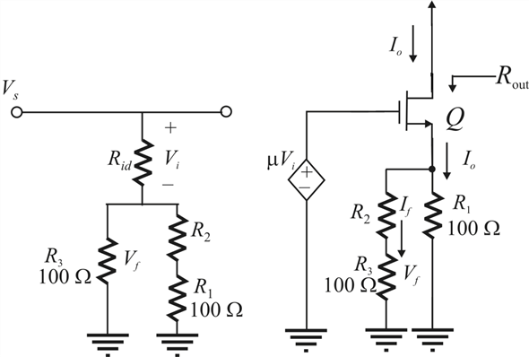

Define the feedback factor .
.
Use current division rule to write the expression for current .
From figure 1, feedback voltage is,
Substitute  for .
for .
Rewrite the equation.
Thus feedback factor  is.
is.
Refer to the circuit diagram of feedback trans-conductance amplifier in Figure P10.51 in the textbook.
Draw the circuit.

Figure 1
Define the feedback factor.
Use current division rule to write the expression for current .
From figure 1, feedback voltage is,
Substitute for .
Rewrite the equation.
Thus feedback factor is.
From Figure1, it is clear that gate to source  is,
is,
Find open-loop gain .
.
Substitute for  in equation.
in equation.
Thus, open loop gain  is .
is .
The closed loop gain  is,
is,

Substitute for  and for
and for .
.
For case
Thus, closed loop gain  is .
is .
Substitute for  ,
,  for
for  ,
,  for
for  .
.
Output resistance  is .
is .
Similarly, feedback factor  is,
is,
Substitute  for
for  and
and  for
for  .
.
Thus, feedback factor  is.
is.
Equate the feedback amount to 60 dB.
Recall the expression for open loop gain .
.

Trans-conductance of the amplifier  is.
is.
Substitute corresponding values.
Equate the feedback amount to 1000.
Substitute for  and
and  for
for  .
.
Thus,  is .
is .
The output resistance  is,
is,
Substitute the corresponding values.
 Substitute the corresponding values.
Substitute the corresponding values.
Hence, the output resistance  is .
is .
Obtain output resistance of an amplifier which is the resistance seen by  in the circuit implies subtract
in the circuit implies subtract  from
from . Thus
. Thus
Substitute corresponding values.
Thus, the output resistance  is .
is .